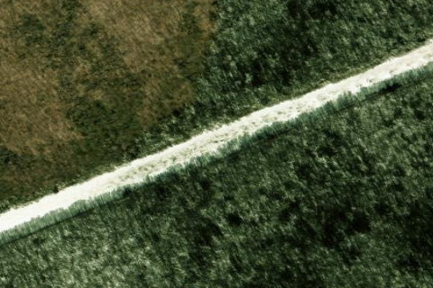

NORTH FOX ISLAND
6Y3 · MI

Aerial imagery source: Esri, Vantor, Earthstar Geographics, and the GIS User Community
| Identifier | 6Y3 |
|---|---|
| State | MI |
| Runway length | 3,001 ft |
| Runway width | 100 ft |
| Surface | TURF |
| Runway | 07/25 |
| Elevation | 639 ft |
| Ownership | public |
| CTAF | 122.9 |
| Coordinates | 45.48209722, -85.78083333 |
Notes
[shortfield] Location Overview: North Fox Island is an uninhabited, state-owned island in Lake Michigan, part of the Fox Islands archipelago located roughly 17 miles northwest of the tip of the Leelanau Peninsula and about 10 miles southwest of Beaver Island. More specifically, the airstrip sits about 27 miles northwest of Charlevoix's municipal airport on the mainland. The island itself is roughly 820 acres and covered in a thick mixed forest of hardwoods and conifers with an understory of brush, ferns, and grass. The runway, designated 6Y3 on aviation charts, is a 3,000-foot-long by 100-foot-wide turf strip, though it's hemmed in tightly — it has displaced thresholds with 60-foot trees on both ends and along the sides. Camping & Recreation: Visitors can camp right on the field — pilots can park in designated areas off Runway 7, and camping on the airstrip property is permitted, though fires and camping are restricted to designated areas at the southwestern end of the runway. Beyond flying in, the island offers swimming and diving: the surrounding waters are used for swimming, free diving, and scuba diving, with at least four known shipwrecks offshore, and the beaches range from rocky to sandy and are popular for sunbathing. Hiking the shoreline is also a draw, but note that there are no lifeguards and cell service is unreliable, and the island offers no cell phone coverage at all. If arriving by boat instead of plane, be aware there is no harbor, anchors are required, and the waters around the island are shallow and rocky. Notes & Warnings: This is genuinely a "land at your own risk" strip — it's classified as an Unimproved Airport and officially listed that way in the Michigan Airport Directory. Bring everything you need: there's no fuel or repair services, and pilots are advised to bring extra food in case a stay is unexpectedly extended, though fresh water is available on the island as long as you can purify it. The trees crowding the runway demand precision - pilots are urged to dial in their airspeed and use flaps with a short/soft-field technique for a clean landing. Safety planning matters here: telling someone your itinerary, wearing a life jacket over the lake, and carrying a personal locator beacon with text capability. Courtesy and stewardship are part of the deal too - visitors are asked to sign the register so the Michigan DNR knows the island is being used, keep fires confined to the fire ring, camp only on the airstrip, and pack out everything they bring in. History: The airstrip has a boom-bust-revival story. After sitting idle for six years and falling into disrepair, the nonprofit Recreational Aviation Foundation (RAF) — led locally by Michigan liaison Brad Frederick — spent years negotiating with the State of Michigan to bring it back to life, finally striking a formal agreement that reopened the strip to the public in August 2015. The restoration effort itself was a feat of improvisation: much of the labor was made possible by flying a mower to the island in pieces aboard a Britten-Norman Islander, then reassembling it on-site. Today the island is managed as part of the Beaver Islands State Wildlife Research Area. The island's past, however, isn't all charming backcountry-aviation lore — in 1976, investigators uncovered that a child exploitation ring had operated on North Fox Island, a case that has long drawn comparisons to the unsolved Oakland County Child Killer murders of the same era. It's a dark footnote that stands in stark contrast to the island's current life as a quiet, volunteer-run aviation getaway.